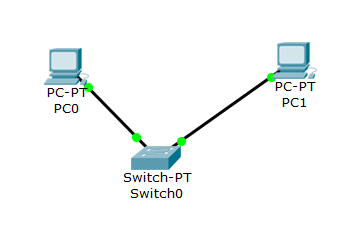
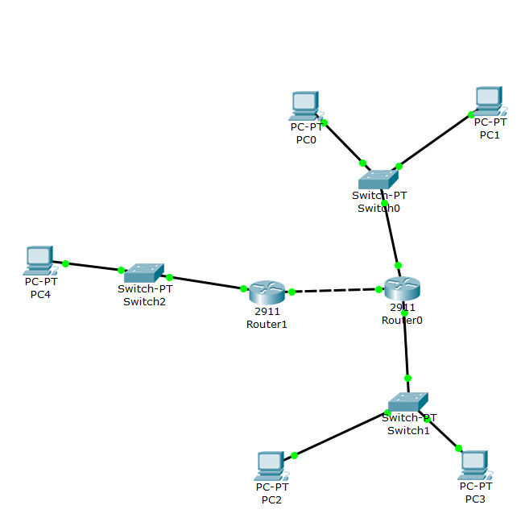

Лабораторная работа №1 "Экосистема разработки программ с открытым кодом"
Создание персональной страницы-отчета на github и работа с git.
1. Пройти регистрацию на сайте GitHub.
2. Получить доступ к репозиторию.
3. Создать личную страницу.
4. Создать персональную веб страницу-отчет с использованием html.
5. Загрузить персональную веб страницу-отчет в репозиторий ИДМ-18 по курсу "Интернет-технологии" на GitHub.
Лабораторная работа №2 "Разработка простого веб-приложения"
Проектирование и разработка индивидуального или коллективного веб-приложения с использованием html,css,js.
1. Собрать команду для разработки веб-приложения (SPA) и распределить роли. Приложение создано командой "Designated Coding Streets", роли данной команды можно увидеть в таблице "Кондуит":
Список ролей и команд
2. Сделать разметку страницы по макету. Макет страницы. Исходный код на index.html.
3. Прописать стили страницы. Исходный код на css.
4. Прописать JavaScript функционал. Исходный код на JavaScript.
Результат: готовый проект, размещенный на одном из репозиториев команды.
Лабораторная работа №3: "Настройка локальной сети передачи данных."
Настройка коммутаторов и маршрутизаторов.
Цель данной работы – ознакомиться с принципами работы компьютерных сетей, базовой настройкой сетевого оборудования и статической маршрутизацией.
Расчет диапазонов подсетей.
| LAN A | LAN B | LAN C |
| 137 | 30 | 37 |
| Префиксная маска | /26 | /25 | /22 |
| Адрес подсети | 192.168.7.0 | 172.16.5.0 | 10.10.7.0 |
| Минимальный адрес | 192.168.7.1 | 172.16.5.1 | 10.10.5.1 |
| Максимальный адрес | 192.168.7.62 | 172.16.5.126 | 10.10.9.254 |
| Broadcast | 192.168.7.63 | 172.16.5.127 | 10.10.9.255 |
Адреса устройств.
| Устройство | IP | Маска | Шлюз по умолчанию |
| PC0 | 192.168.7.12 | 255.255.255.192 | 192.168.7.1 |
| PC1 | 192.168.7.11 | 255.255.255.192 | 192.168.7.1 |
| PC2 | 172.16.7.126 | 255.255.255.128 | 172.16.7.1 |
| PC3 | 172.16.7.125 | 255.255.255.128 | 172.16.7.1 |
| PC4 | 10.10.7.254 | 255.255.252.0 | 10.10.7.1 |
| Router0 FastEthernet 0/0 | 192.168.7.1 | 255.255.255.192 | – |
| Router0 FastEthernet 1/0 | 172.16.7.1 | 255.255.255.128 | – |
| Router0 FastEthernet 6/0 | 15.15.7.1 | 255.255.255.252 | – |
| Router12 FastEthernet 0/0 | 15.15.7.2 | 255.255.255.252 | – |
| Router12 FastEthernet 1/0 | 10.10.7.1 | 255.255.252.0 | – |
1. Разместить два компьютера и коммутатор, настроить между ними адресацию.

2. Добавить еще один коммутатор с двумя компьютерами и маршрутизаторы. Провести настройку.

3. Настроить статическую маршрутизацию при помощи команды: ip route [сеть назначения] [маска] [маршрут]
4. Установить баннер на сетевое оборудование: banner motd [баннер]